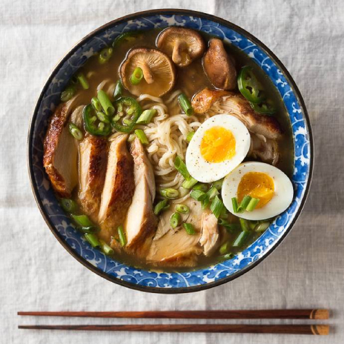

The Best Cinnamon Rolls You’ll Ever Eat
Home


4.80 from 260 votes
Author: Laura Bolton | Total Time: 1 Hr | Yield: 2 Servings
Easy homemade chicken ramen, with a flavorful broth, roasted chicken, fresh veggies, lots of noodles, and a soft cooked egg. Inspired by traditional Japanese ramen, but on the table in under an hour.
I opted for chicken instead of pork, but kept the rest of the ramen vibe somewhat traditional: a killer chicken soup base with garlic, ginger, shitake mushrooms and soy sauce, filled with squiggly ramen noodles and slices of succulent chicken, and topped with fresh spring onions and a soft-boiled egg.
My version is on the table in less than an hour — and half that if you opt for store-bought chicken — and while it might not be completely authentic, it's a flavorful, comforting soup just in time for the unmistakably crisp, chilly autumn weather that these first days of October have ushered in.
Ingredients
- 2 chicken breasts (boneless, skin-on)
- kosher salt and freshly-ground black pepper, to season
- 1 Tbsp unsalted butter
- 2 tsp sesame or vegetable oil
- 2 tsp fresh ginger, minced
- 1 Tbsp fresh garlic, minced
- 3 Tbsp low-sodium soy sauce
- 2 Tbsp mirin
- 4 cups rich chicken stock
- 1 oz dried shitake mushrooms (or 1/2 cup fresh)
- 1-2 tsp sea salt, to taste
- 2 large eggs
- 1/2 cup scallions, sliced
- 2 (3 oz) packs dried ramen noodles
- optional: fresh jalapeño or chili slices, for serving
Instructions
- Cook the chicken: Preheat the oven to 375℉. Season the chicken generously with salt and pepper.
- Melt the butter in a large oven-safe skillet over medium heat. Add the chicken, skin-side down, and cook until the skin is golden brown and releases easily from the pan, about 5-7 minutes. Flip the chicken over and cook for another 4-5 minutes, until golden.
- Transfer the skillet to the oven and roast for 15-20 minutes, until the chicken is cooked through. Remove from the oven, transfer the chicken to a plate and cover with foil until ready to serve.
- Make the ramen broth: Heat the oil in a large pot over medium heat, until shimmering. Add the garlic and ginger, and cook for a few minutes until softened. Add the soy sauce and mirin, and stir to combine. Cook for another minute.
- Add the stock, cover, and bring to boil. Remove the lid, and let simmer uncovered for 5 minutes, then add the dried mushrooms. Simmer gently for another 10 minutes, and season with salt, to taste.
- Make the soft-boiled eggs: Fill a pot with enough water to cover the eggs, and bring to a boil. Gently lower the eggs (still cold from the fridge) into the boiling water, and let simmer for 7 minutes (for a slightly-runny yoke) or 8 minutes (for a soft, but set-up yoke).
- Meanwhile, fill a large bowl with ice water. When the timer finishes, transfer the eggs to the ice bath to stop the cooking process. Wait at least 5 minutes, or until cool enough to handle, then carefully peel away the shell and slice in half, lengthwise. Set aside until ready to serve.
- Assemble the ramen bowls: Meanwhile, chop the scallions and jalapeño (if using). Slice the chicken into thin pieces. Set aside. When the eggs finish cooking, add the ramen noodles to the boiling water.
- Cook for 2-3 minutes, until soft, then divide the noodles into two large bowls. Add the sliced chicken and the ramen broth. Top with the fresh scallions, jalapeño and the soft boiled egg. Serve immediately.